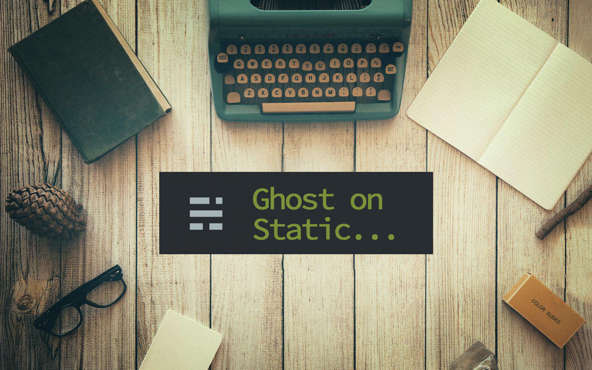
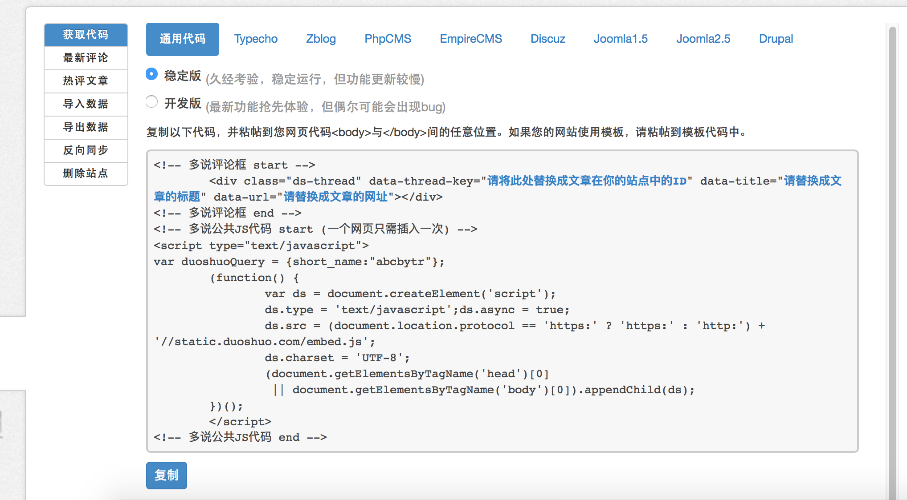
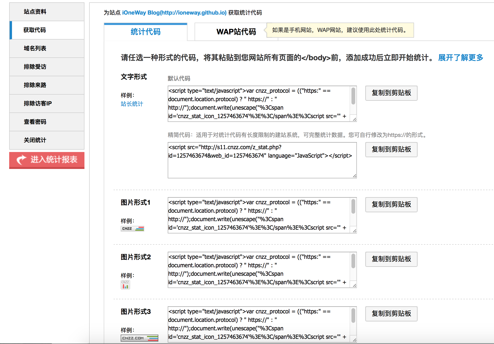

对IT技术的学习也有不短的时间了。经常观看大神们的博客，对于他们博客不仅仅内容精彩，而且主题也很大气高端，所以也希望自己能有一个这样的博客。
首先就是要选择博客平台，经过一番对比，最终选GitHub Pages，因为其免费且专业，并且还有以下优点：
- 简易的配置，轻量级别系统，不需要数据库
- 支持标记语言，如Markdown
- 使用GitHub托管服务，免费300MB空间
- 可以绑定自己的域名
- 支持CDN，提升访问速度
当然GitHub Pages也有一些缺陷：
由于GitHub Pages对Jekyll无缝支持。可是我在Jekyll主题市场里找了许久，没能找到我想要的那种看上去简洁，高端，并且适合程序员写技术博客的主题。于是就去借鉴大神们的选择，发现OneV‘cat的博客主题:vno正是我所想要的那种。
OneVcat中使用的博客程序是Ghost，Ghost是一种轻量级的动态博客，有一个管理后台，可以直接写作和管理博客。本质上和WordPress是相通的，只是 Ghost 搭建在 Node.js 环境上，轻量，快速，简洁。
所以我最终选择了Ghost，因为其高颜值和强大的后台管理,另外还有一个原因就是它还有中文版Ghost
Ghost 技术栈简要解析 把 Ghost 的结构厘清，其实蛮简单，特别是使用官方已经编译好的 Ghost 压缩包解压后进行二次开发的话：
Ghost 的页面使用的是
Handlebars.js前端模板引擎，页面总数在 10 个左右。页面采用引入/调用方式，就是把常规的 HTML 结构，譬如meta头信息、header、footer等常用且可以复用的 HTML 页面结构，给独立成一个个模板文件，而在其他诸如单篇博文页、博主个人主页等页面模板文件内，引用上面的独立模板文件。譬如在单篇博文页内引入 meta 头信息模板文件，就可以达到一处编写,处处调用的类似变量调用/引入的概念。前端模板引擎的出现，给前端开发人员缩短开发周期起到了不可或缺的作用 。
由于GitHub Pages只支持静态博客，而Ghost却是动态的。所谓动态博客，需要服务器来支持数据输出。而静态页面，就是诸如HTML,XML等标记语言写好结构，用css描述好表现样式，用JavaScript写好了交互逻辑的，理论上不再接受后端服务器数据输出而动态修改的页面。
简而言之，静态页面是死的，动态页面是活的。对于Github Pages这样仅仅支持静态网站/页面的托管服务而言，怎么搞定Ghost的托管呢？
开源项目Buster
Buster是Python语言写的一个文件路径遍历器。通过调用Wget把Ghost中用到的图片，字体，CSS，javaScript等静态资源统一复制到一个新的文件夹(同时此文件夹可以作为Github Pages的仓库)，然后相应地修改HTML文件内引用的静态文件的路径，使之最终生效。Buster由Misiur提供：https://github.com/Misiur/buster
准备工作
1, Node.js：Ghost依赖Node.js。 建议安装v0.10.26版本。
2, Git: 用于克隆项目到本地，部署、提交项目到 Github。Mac OSX 自带。
3, Python：用于执行Buster工具，Mac OSX自带。
4, pip: Python包管理工具，用于安装Buster工具。
5, Buster: 用于将Ghost动态页面转换为静态页面。
6, Ghost中文版：建议安装中文版，因为中文版已经包含了所有需要的插件。
7, vno：一款简洁高端大气的ghost博客主题。
具体步骤
1，搭建环境
- 安装node.js，建议v0.10.6版本
brew update
brew install nvm //安装nvm
并在(~/.bashrc, ~/.profile, or ~/.zshrc)中添加如下内容
#For NVM
export NVM_DIR=~/.nvm
source $(brew --prefix nvm)/nvm.sh
用nvm安装node.js
nvm install v0.10.6
- 进入用户Documents目录,并新建文件夹：GithubPages_ZH.
cd ~/Documents && mkdir GithubPages_ZH
- 进入GithubPages_ZH目录，并下载Ghost中文版，并将其命名为Ghost。
cd GithubPages_ZH
git clone https://github.com/diancloud/Ghost.git
- 进入GithubPages_ZH/Ghost/content/themes/, 然后下载vno主题.
cd Ghost/content/themes/
git clone https://github.com/onevcat/vno.git
- 进入GithubPages_ZH/Ghost 启动Ghost服务
nvm use default 0.10.6
npm start
浏览器打开:http://localhost:2368/ghost进入后台管理页面。注册一个管理员帐号，并记住帐号密码。
设置主题 点击左侧栏“全局设置”按钮，进入设置页面，下滑到最下方，主题：选择vno主题，并保存。
安装pip:Python包管理工具
sudo easy_install pip
- 安装Buster: 执行以下命令
pip install git+https://github.com/Misiur/buster
登陆Github 创建仓库，仓库名称
必须是：[your－username].github.io终端执行以下命令：
cd ~/GithubPages_ZH
buster setup -gh-repo=\
"https://github.com/<username>/<username>.github.io.git"
//这里会要求输入github帐号密码。
buster generate //产生静态文件，此时会在当前文件夹下产生static文件夹。
buster deploy //发布
- 在static文件夹下添加文件：.gitignore文件，用于在提交github时忽略部分文件。在.gitignore中添加如下内容：
# vim ~tmp files
*.swp
*.un~
# ignore bourbon install so that it is the latest build
# for developers that need it
assets/scss/bourbon/*
# ignore the sass-cache/
.sass-cache/*
**/.sass-cache/*
### OSX ###
.DS_Store
.AppleDouble
.LSOverride
# Icon must end with two \r
Icon
# Thumbnails
._*
# Files that might appear on external disk
.Spotlight-V100
.Trashes
# Directories potentially created on remote AFP share
.AppleDB
.AppleDesktop
Network Trash Folder
Temporary Items
.apdisk
config.codekit
- 你需要根据自己的实际情况对主题中各个按钮的点击链接以及图片进行设置，具体请参考链接：https://github.com/onevcat/vno
至此，Ghost博客搭建完成。之后每次跟新博客时：需要点击编辑窗口右上方的更新按钮，然后终端执行以下命令：
//在GithubPages_ZH下执行
//不需要再次执行Buster setup 命令
buster generate
buster deploy //发布
Ghost 相关资源推荐
- 各种 Ghost 主题：http://www.allghostthemes.com
- 官方主题市场：http://marketplace.ghost.org
Ghost高级设置
添加评论系统
- 注册多说帐号,点击“安装”按钮并填写相关设置;
- 复制稳定版通用代码，黏贴在：
Ghost/content/themes/casper/post.hbs模板文件的 ｀｀{{/post}}标签前，并保存。
如图： 注意将其中中文字符分别替换为：{{id}}，{{title}}，ioneway.github.io{{url}}. 其中ioneway.github.io替换为你的域名。
<!-- 多说评论框 start -->
<div class="ds-thread" data-thread-key="{{id}}" data-title="{{title}}" data-url="ioneway.github.io{{url}}"></div>
<!-- 多说评论框 end -->
<!-- 多说公共JS代码 start (一个网页只需插入一次) -->
<script type="text/javascript">
var duoshuoQuery = {short_name:"abcbytr"};
(function() {
var ds = document.createElement('script');
ds.type = 'text/javascript';ds.async = true;
ds.src = (document.location.protocol == 'https:' ? 'https:' : 'http:') + '//static.duoshuo.com/embed.js';
ds.charset = 'UTF-8';
(document.getElementsByTagName('head')[0]
|| document.getElementsByTagName('body')[0]).appendChild(ds);
})();
</script>
<!-- 多说公共JS代码 end -->
**2，添加 CNZZ 统计** 1， 注册[CNZZ](http://www.cnzz.com) 2， 登陆[CNZZ](http://www.cnzz.com) ```站点设置```, ```获取代码``` 选择其中一种，并复制代码 如图：  3， 终端输入命令```npm start```开启服务
4， 浏览器输入 [http://localhost:2368/ghost](http://localhost:2368/ghost)进入后台管理。
5. 点击左侧边栏：```插入代码```，将复制的代码粘贴在```页脚```框中，保存。
至此，你的博客就有了基本完整的功能了，你可以登录多说和[CNZZ](http://www.cnzz.com)管理你的站点。 **如有遗漏，欢迎指正。谢谢。**
使用中遇到的问题
使用RSS阅读器：NewsBlur，遇到的问题：- 搜索关键字"iOneWay"，无法搜索到我的博客RSS源地址。
- 手动添加“http://ioneway.github.io/rss/index.rss”后，在列表中不显示图标icon.
- 点击进去，阅读文章，发现文章中图片不显示。
对RSS丝毫不懂，有哪位网友可以解答一下。